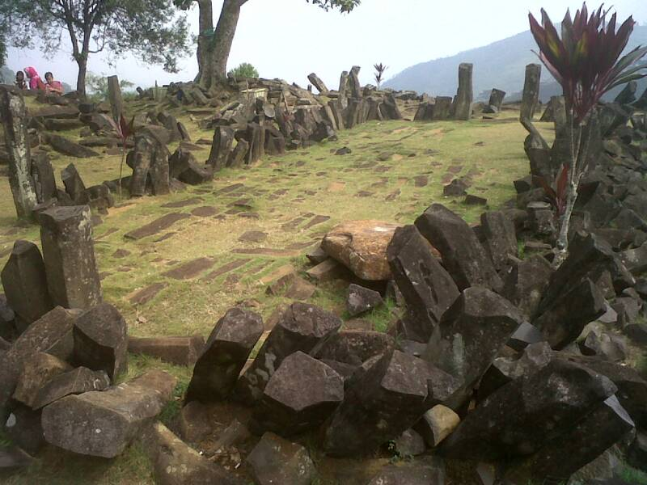

Gunung Padang
West Java, Indonesia

A terraced stone site on a hilltop. DISPUTED: a 2023 study claimed parts were built more than 20,000 years ago, making it the world's oldest pyramid, but the journal retracted the paper in 2024 because the dated soil showed no sign of human work. 1
Open in the interactive Watcher
Sources
- Gunung Padang Wikipedia